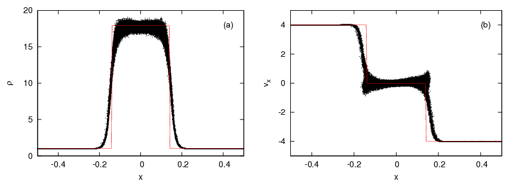
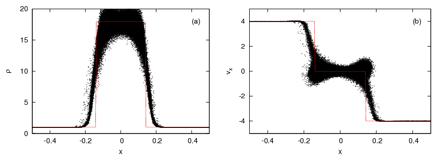
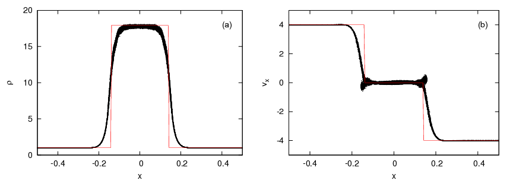
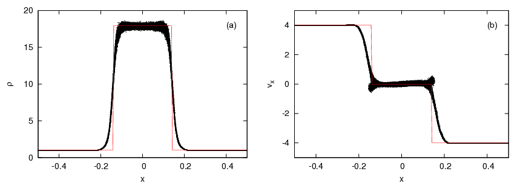

Colliding flows shocktube test
The colliding flows test is a simple shocktube test used to demonstrate that a code can correctly model high-Mach number shocks formed due to the interaction of two colliding, bulk flows. We use an isothermal equation of state (c = 1 in dimensionless units). We run the simulation until a dimensionless time of t = 0.6 .
| x < 0 | x > 0 | |
|---|---|---|
| &rho | 1.0 | 1.0 |
| P | 1.0 | 1.0 |
| vx | 4.0 | -4.0 |
We now state the code options selected for all of the tests performed using these initial conditions.
- Dimensionless code units
- 2nd order Leapfrog kick-drift-kick integration scheme
- Periodic wrapping in the x-, y- and z-dimensions
- Hydro forces only
- Isothermal equation of state
- Global timesteps
- Barnes-Hut tree for neighbour-searching

{kind=link}
COL-3D-AB
- 3-dimensions
- Standard alpha-beta artificial viscosity

{kind=link}
COL-3D-AB-BAL
- 3-dimensions
- Standard alpha-beta artificial viscosity
- 'Balsara-switch' viscosity limiter

COL-3D-AB-TD
- 3-dimensions
- Standard alpha-beta artificial viscosity
- Time-dependent artificial viscosity

{kind=link}
COL-3D-MON
- 3-dimensions
- Monaghan (1997) viscosity

{kind=link}
COL-3D-RIEMANN
- 3-dimensions
- Standard SPH formulation
- Riemann solver (no artificial viscosity)